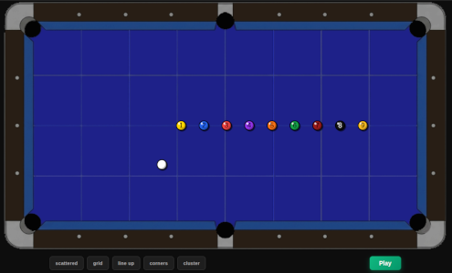
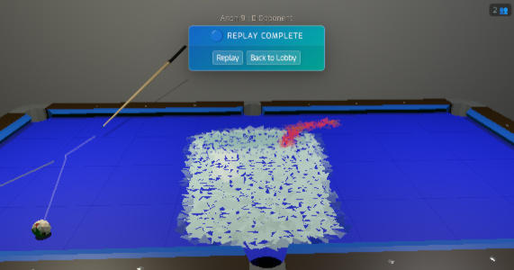

The line up is a classic cue ball control drill — all the balls racked along the centre line, pot them in order while keeping the cue ball on the line the whole time. Simple idea, surprisingly unforgiving.

Took quite a few attempts. The early balls are fine but the cue ball position compounds — one slightly off shot and the next one becomes awkward, and it unravels from there. Finally got a clean run.

If you want to try it yourself, the practice mode lets you set up the line up and have a go.